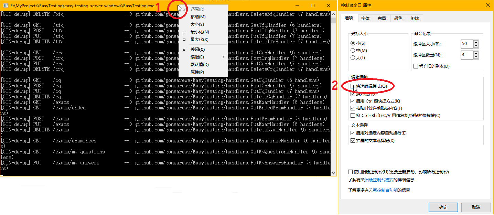

先介绍系统的部署。Easy Testing 的服务端与教师客户端是打包在一起的， 这打包文件和学生客户端打包文件一起在 GitHub Releases 发布。 根据操作系统、CPU 架构选择需要的版本下载即可。
首先要安装 MySQL 数据库，建议版本 5.7。 安装步骤参考官网文档。
然后将前面下载的压缩包解压至任意位置，其中包括：
├── EasyTesting 服务端主程序
├── server-config.yaml 服务端主程序的配置文件
├── favicon.ico 软件图标
├── index.html 教师端主页面
├── sql MySQL 脚本
│ ├── setup.sql 创建数据库的脚本
│ └── test.sql 插入测试数据的脚本
└── static 教师端主页面的静态文件
├── css 样式文件
│ ├── app.4c2aef82.css
│ ├── chunk-019156c7.a8088982.css
│ ├── chunk-07c1fcd4.04dea0eb.css
│ └── ...
├── fonts 字体文件
│ ├── element-icons.535877f5.woff
│ └── element-icons.732389de.ttf
├── img 图片
│ ├── 404.a57b6f31.png
│ ├── 404_cloud.0f4bc32b.png
│ ├── avatar.ecba1844.gif
│ └── ...
└── js javascript 脚本文件
├── app.82de0e6e.js
├── app.9d60ec40.js
├── chunk-019156c7.b0ca593f.js
└── ...
其中 static 文件夹是前端自动打包的，内部文件名与文件数未必与上面的一致。
server-config.yaml 是关键的配置文件，内部的属性都有注释，
如果仅用于测试，仅需修改数据库 dsn 的用户名与密码（即替换掉 root:12345）。
记得设置好文件权限：
$ sudo chmod -R 644 your_path_to_folder/easy_testing
$ sudo chmod 755 your_path_to_folder/easy_testing/EasyTesting
接下来执行数据库脚本 setup.sql，参考官网文档进行。 如果需要测试数据，还可接着执行 test.sql。
正式使用时的操作
正式使用时，务必不要使用默认的数据库用户名与密码，并且要将 server-config.yaml 中的 jwt_secret_key 改成其他的随机字符。 仅需执行数据库脚本 setup.sql，然后手动插入一个 root 用户。
最后进入文件夹根目录启动服务端主程序（因为程序会在当前工作目录下查找配置文件），
$ cd your_path_to_folder/easy_testing
$ ./EasyTesting
正常启动后终端会出现日志，类似于：
[GIN-debug] [WARNING] Running in "debug" mode. Switch to "release" mode in production.
- using env: export GIN_MODE=release
- using code: gin.SetMode(gin.ReleaseMode)
[GIN-debug] GET /teacher_auth --> github.com/appleboy/gin-jwt/v2.(*GinJWTMiddleware).LoginHandler-fm (5 handlers)
[GIN-debug] GET /student_auth --> github.com/appleboy/gin-jwt/v2.(*GinJWTMiddleware).LoginHandler-fm (5 handlers)
[GIN-debug] GET / --> github.com/gin-gonic/gin.(*RouterGroup).StaticFile.func1 (5 handlers)
[GIN-debug] HEAD / --> github.com/gin-gonic/gin.(*RouterGroup).StaticFile.func1 (5 handlers)
[GIN-debug] GET /favicon.ico --> github.com/gin-gonic/gin.(*RouterGroup).StaticFile.func1 (5 handlers)
[GIN-debug] HEAD /favicon.ico --> github.com/gin-gonic/gin.(*RouterGroup).StaticFile.func1 (5 handlers)
[GIN-debug] GET /static/*filepath --> github.com/gin-gonic/gin.(*RouterGroup).createStaticHandler.func1 (5 handlers)
[GIN-debug] HEAD /static/*filepath --> github.com/gin-gonic/gin.(*RouterGroup).createStaticHandler.func1 (5 handlers)
[GIN-debug] GET /ping --> github.com/gonearewe/EasyTesting/handlers.PingHandler (5 handlers)
[GIN-debug] GET /hello --> github.com/gonearewe/EasyTesting/handlers.HelloHandler (6 handlers)
[GIN-debug] GET /cache --> github.com/gonearewe/EasyTesting/handlers.GetCacheHandler (6 handlers)
[GIN-debug] PUT /cache --> github.com/gonearewe/EasyTesting/handlers.PutCacheHandler (6 handlers)
为了调试方便，可以把 stdout 和 stderr 都重定向到文件中并让程序后台运行：
$ nohup ./EasyTesting &> debug.log &
Windows 平台注意终端冻结问题
假如你在 Windows 10 平台下运行服务端，则要尤其注意：终端默认会在你点击它，同时应用程序有输出时，直接冻结程序。 通常只需要按下 Esc 或回车就能恢复程序，但倘若没有注意到这个问题，也许会导致大量的客户端连接超时 （报错：timeout of 5000ms exceeded）。
这并非是软件自身的 bug，而是 Windows 10 的问题。 详情参见 Why is my command prompt freezing on Windows 10?。 解决方法是在终端标题栏上右键，菜单选择默认值或属性（默认值会应用于所有终端），取消勾选快速编辑模式， 确定并重启终端。

现在即可在浏览器上访问 http://localhost:9000 进入教师端（如果你没有修改默认端口号的话）。 test.sql 提供的教师用户有：
| 工号 | 姓名 | 密码 |
|---|---|---|
| 0 | root | ET000 |
| 2010301800 | 张三 | Scala |
| 2012550921 | 李四 | K_On |
如果服务器在启动时出现：
Error 1292: Incorrect datetime value: '0000-00-00' for column 'end_time'
说明是 MySQL 禁用了 datetime 类型的零值。
可以通过在 MySQL console 中输入 SELECT @@GLOBAL.sql_mode; 查看
全局的 sql_mode，它可能包括这些内容：
ONLY_FULL_GROUP_BY,STRICT_TRANS_TABLES,NO_ZERO_IN_DATE,NO_ZERO_DATE,ERROR_FOR_DIVISION_BY_ZERO,NO_AUTO_CREATE_USER,NO_ENGINE_SUBSTITUTION
只需要删除其中的 NO_ZERO_IN_DATE 与 NO_ZERO_DATE，通过重新全局设置 sql_mode：
SET GLOBAL sql_mode = 'ONLY_FULL_GROUP_BY,STRICT_TRANS_TABLES,ERROR_FOR_DIVISION_BY_ZERO,NO_ENGINE_SUBSTITUTION';
参考了 Stackoverflow 上的问题 MySQL Incorrect datetime value: '0000-00-00 00:00:00'